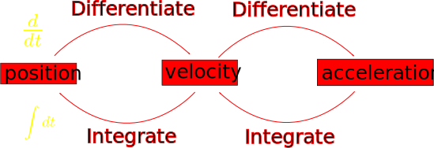
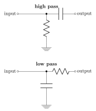

<!doctype html>
<html lang="en">
    <head>
        <meta charset="utf-8">
        <title>reveal-md</title>
        <link rel="stylesheet" href="./css/reveal.css">
        <link rel="stylesheet" href="./css/theme/black.css" id="theme">
        <link rel="stylesheet" href="./css/highlight/zenburn.css">
        <link rel="stylesheet" href="./css/print/paper.css" type="text/css" media="print">

    </head>
    <body>

        <div class="reveal">
            <div class="slides"><section ><section data-markdown><script type="text/template"># Oxhack Analog Electronics
-------
## Session 1 - Introduction
</script></section><section data-markdown><script type="text/template">
# Welcome / about me
</script></section><section data-markdown><script type="text/template">
## What this is 

* This is an introduction to the fundamentals of analog electronics (which underpins digital also)

* This can get a bit difficult, if something isn't clear please ask :-)

* The maths (at a conceptual level, no details) is left in - but please don't be put off
it's mostly there for completeness

</script></section><section data-markdown><script type="text/template">
## What this isn't

* This isn't about the physics (but if you're interested I'm happy to talk about it after)

* This isn't comprehensive - see links at the end for good starting points

* This won't teach you how to actually build cool projects - see Oxhack's digital sessions
</script></section><section data-markdown><script type="text/template">
## Costs

* Printed schematics & info sheets are provided
* All the components you need to build every circuit are provided

* The cost is about £5 for the whole course

</script></section></section><section ><section data-markdown><script type="text/template">
## Analog Electronics

Wikipedia says:

> Analog electronics are electronic systems with a continuously variable signal, in contrast to digital electronics where signals usually take only two levels. The term "analogue" describes the proportional relationship between a signal and a voltage or current that represents the signal.
</script></section><section data-markdown><script type="text/template">
* Analog is also spelled "analogue"

* Difference between analog and digital

* Signals which vary continuously with time

* Signals can be represented by voltages and currents

</script></section></section><section ><section data-markdown><script type="text/template">
## Maths crash course

( see "cheat sheets")

* Basic wave definitions (see demo)
  - frequency $ \omega = 2\pi f$ 
  - Amplitude $A$
  - phase $\phi$
  
  - time period:
	
	$ T= {1 \over f} $
</script></section><section data-markdown><script type="text/template">
## Important wave types

(see demo)

* Sine wave

* square wave

* triangle wave
</script></section><section data-markdown><script type="text/template">
## Calculus

* Analogy with car position , speed & acceleration



(show demo)

</script></section><section data-markdown><script type="text/template">
## Calculus symbols

* Differentiation

$v = {dx \over dt}$

* Integration

$x = \int v dt $
</script></section><section data-markdown><script type="text/template">
## Calculus and frequency

In the top 5 most important concepts in analog electronics:

> Higher frequency signals change faster, therefore have larger derivatives!

</script></section></section><section ><section data-markdown><script type="text/template">
## Physics crash course

* Electrons

	* Charge $Q$

	* Energy $E$
</script></section><section data-markdown><script type="text/template">
## Voltage and Current

* Voltage $V$ - the energy $E$ carried per unit charge $Q$ (i.e energy per electron)

$ E = V \times Q $

* Current $I$ - the amount of charge $Q$ (i.e. number of electrons) flowing per unit time $t$

$ Q = I \times t$
</script></section><section data-markdown><script type="text/template">
__Current:__
The amount of charge (i.e. number of electrons) passing a point per unit time.

$I = {{dQ}\over{dt}} $

__Voltage:__
The average difference in energy between electrons at two points

__Ground:__
A common (but arbitrary) voltage reference point for a circuit, chosen to have 0 energy.

</script></section><section data-markdown><script type="text/template">
* Electricity is the flow of electrons
* Two important properties: __charge__ and __energy__
* __Charge__ of an electron is fixed and _never changes_
* __Energy__ of an electron changes through interaction with circuit elements
</script></section></section><section ><section data-markdown><script type="text/template">
## Basic Electronics concepts

* Conventional current is opposite to flow of electrons

* Electrons transfer energy to (and from) circuit components
</script></section><section data-markdown><script type="text/template">
### Kirchoff's Laws 1 (KCL)

1) Current at a node adds up to 0 (electrons can't be created or destroyed)


</script></section><section data-markdown><script type="text/template">
### Kirchoff's Laws 2 (KVL)

2) Voltage around a loop adds up to 0 (energy change must all be accounted for)


</script></section><section data-markdown><script type="text/template">
### Resistors


Dissipate energy as heat

$V=I\times R$

Useful for converting current into voltage (or vice versa), defining ratios of voltage drops, limiting current into other devices

</script></section><section data-markdown><script type="text/template">

### capacitors


Store energy temporarily by separating charge in an electric field.

$Q=c \times V$

$\Rightarrow I = c \times {dV \over dt}$

Respond to the _rate of change_ of voltage, not the voltage itself
Useful for filtering, smoothing, short term storage of a voltage

</script></section></section><section ><section data-markdown><script type="text/template">
# Equipment Intro Demo

* Scope
  * probe setup
  * coupling

* Signal generator
* Power supply
</script></section><section data-markdown><script type="text/template">
## Breadboard

* Convenient for quick prototyping (no solder)
* Each half-row is connected together
* Ground rails are common
* Voltage rails are common


</script></section><section data-markdown><script type="text/template">
## Breadboard tips

* push components in fully to get good contact (but try not to bend the legs)
* use as few jumper wires as possible (tidier circuits easier to debug!)

<font color="red">
the circuit doesn't have to be laid out the same way as the schematic - all that matters is the topology of the connections!
</font>

</script></section><section data-markdown><script type="text/template">
## Oscilloscope

* Used for viewing voltage signals as a function of time
* Important things to be aware of:
  * probe coupling
  * probe attenuation
  * All the grounds are connected together
  
(oscilloscope demo & practical)

</script></section><section data-markdown><script type="text/template">

## Signal Generator

* Used to generate test signals

(sig gen demo & practical)

</script></section><section data-markdown><script type="text/template">

# Multimeter

* Used to measure DC currents & voltages accurately
* Check values of resistors and capacitors
* Test diodes & continuity

</script></section></section><section  data-markdown><script type="text/template">

## RC Filters


$ f\_c = {1 \over {2\pi RC}}$
</script></section><section  data-markdown><script type="text/template">
## Practical
* Build low pass & high pass filters
* work out corner frequency
* observe what happens with changing frequency sine wave on input
* Observe what happens with square & triangle waves on low pass

EXTRA:
* build integrator circuit from schematic
</script></section><section  data-markdown><script type="text/template">
## Your feedback

* Any complaints or comments let me know to improve future sessions!

* Anyone interested in a "PCB design & build" type session?
* Anyone interested in a specific project build? Any ideas?

* Anyone interested in learning some physics (as opposed to electronics) in different session?


</script></section><section  data-markdown><script type="text/template">
### Useful Links

https://artofelectronics.net

http://www.electronics-tutorials.ws

[Walter Lewin's MIT 8.02x lectures](https://www.youtube.com/watch?v=rtlJoXxlSFE&list=PLyQSN7X0ro2314mKyUiOILaOC2hk6Pc3j)

https://github.com/weatherhead99/oxhack\_analog\_electronics

http://www.falstad.com/circuit/e-index.html


</script></section></div>
        </div>

        <script src="./lib/js/head.min.js"></script>
        <script src="./js/reveal.js"></script>

        <script>
            function extend() {
              var target = {};
              for (var i = 0; i < arguments.length; i++) {
                var source = arguments[i];
                for (var key in source) {
                  if (source.hasOwnProperty(key)) {
                    target[key] = source[key];
                  }
                }
              }
              return target;
            }

            // Optional libraries used to extend on reveal.js
            var deps = [
              { src: './lib/js/classList.js', condition: function() { return !document.body.classList; } },
              { src: './plugin/markdown/marked.js', condition: function() { return !!document.querySelector('[data-markdown]'); } },
              { src: './plugin/markdown/markdown.js', condition: function() { return !!document.querySelector('[data-markdown]'); } },
              { src: './plugin/highlight/highlight.js', async: true, callback: function() { hljs.initHighlightingOnLoad(); } },
              { src: './plugin/zoom-js/zoom.js', async: true },
              { src: './plugin/notes/notes.js', async: true },
              { src: './plugin/math/math.js', async: true }
            ];

            // default options to init reveal.js
            var defaultOptions = {
              controls: true,
              progress: true,
              history: true,
              center: true,
              transition: 'default', // none/fade/slide/convex/concave/zoom
              dependencies: deps
            };

            // options from URL query string
            var queryOptions = Reveal.getQueryHash() || {};

            var options = {};
            options = extend(defaultOptions, options, queryOptions);
        </script>


        <script>
            Reveal.initialize(options);
        </script>
    </body>
</html>
